SandKit was released to accompany the talk "Escaping the Sandbox" given at EuSecWest Amsterdam, Syscan Singapore, Syscan Vietnam, and ReCon in the summer of 2010.
There isnt really much in the way of a source of documentation other than the slides (download below). Also see the Readme.txt's for any other notes in each directory of source code.
1. Download/Install Python2.4 for Windows. (It has to be 2.4 cuz sa7shell has it statically coded. You can use a diff version of you recompile the tools.)
2. Download/Install CTypes for Python2.4
3. Move pyloader.dll to c:\
4. Run SandKit.py
That should be it!
See below for download and manual build info.
Here are screenshots of just a few tools from SandKit:
| Sa7Shell: (Full Python injected in Chrome) | Sa7Shell: (Full Python injected in Notepad) | Token/Handle Sniping | Interrogating Tokens |
| 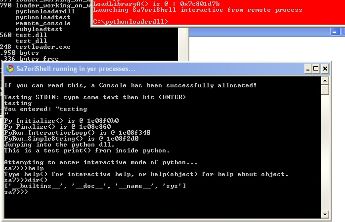 | 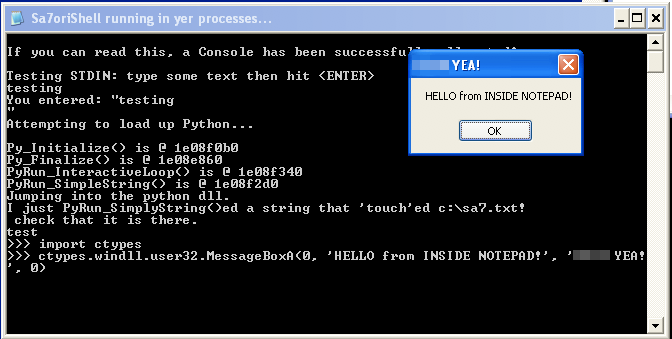 | 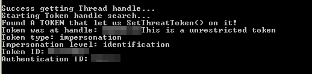 | 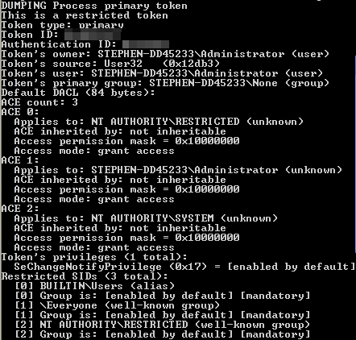 |
| Copy memory between processes. | "Hexdump" memory directly from process. | Dump process memory to file. | Compare memory in two processes. |
| 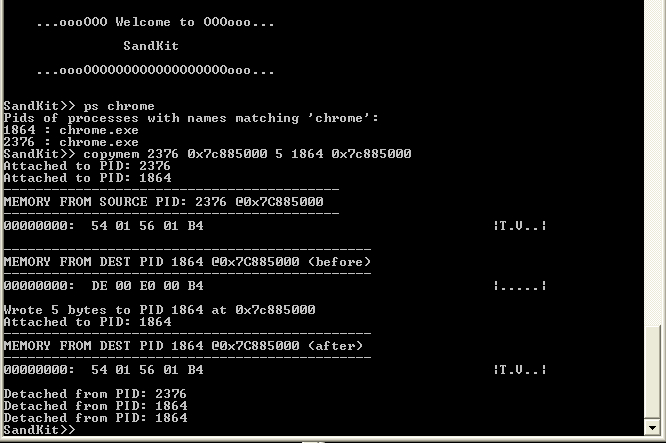 | 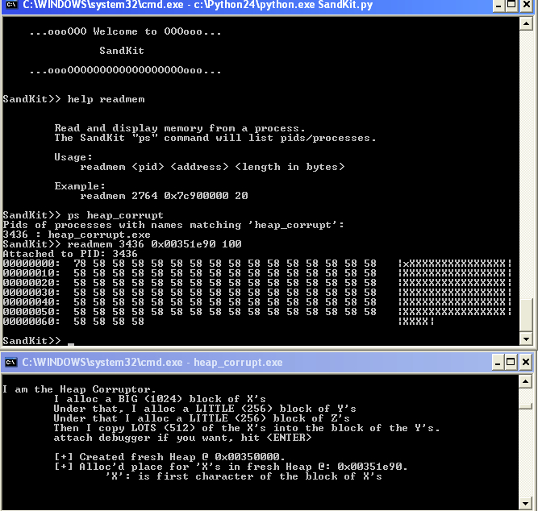 | 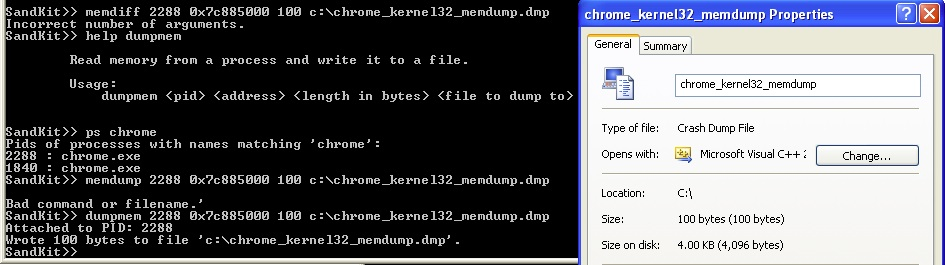 | 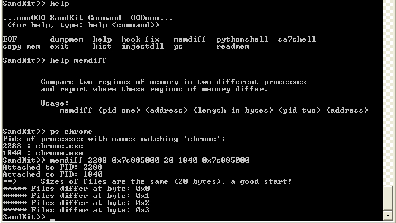 |
| Write string/array into process memory. | Inline Python shell (within Sandkit) | Vanilla Dll injection command. (with test dll) | |
| 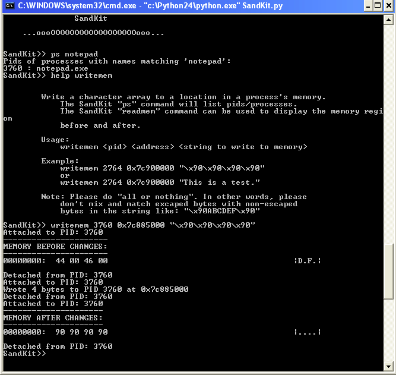 | 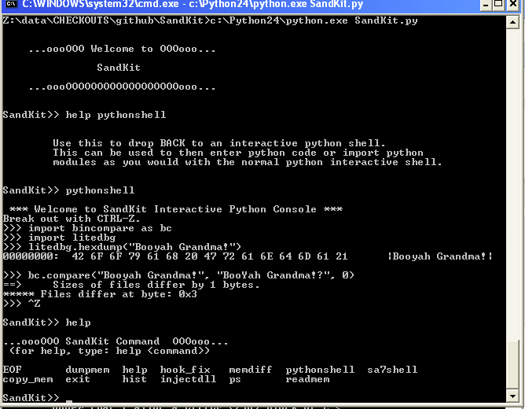 | 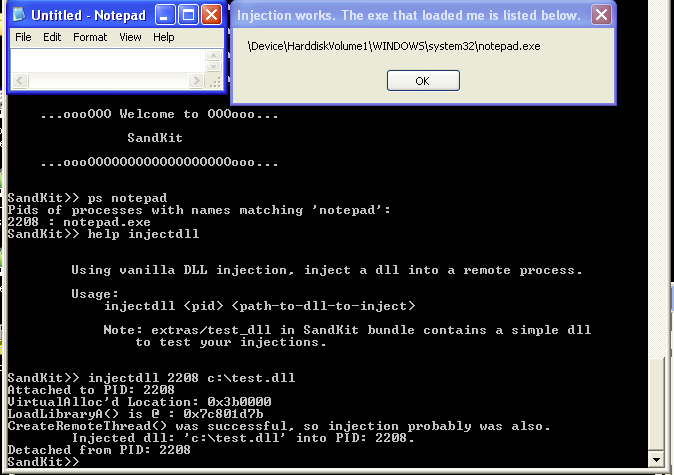
Stephen A. Ridley (stephen@sa7ori.org)
Twitter: s7ephen
You can download this project in either zip or tar formats.
You can also clone the project with Git by running:
$ git clone git://github.com/s7ephen/SandKit
{kind=link}
{kind=link}
{kind=link}
{kind=link}
{kind=link}
{kind=link}
{kind=link}
{kind=link}
{kind=link}
{kind=link}
{kind=link}